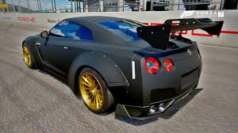
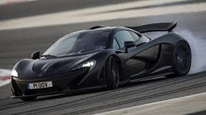

NISSAN SKYLINE
El Nissan Skyline es un automóvil deportivo fabricado por la empresa japonesa Nissan desde 1955. Desde entonces empezaron a aparecer las primeras modificaciones y versiones de este automóvil. Al principio se comercializaron dos versiones, que simplemente se diferenciaban por sus nombres (siendo el mismo automóvil), el Nissan A200GT y el Prince A200GT.


McLAREN P1
El McLaren P1 es un automóvil superdeportivo híbrido de edición limitada por el fabricante automotriz británico McLaren Automotive. El coche de concepto debutó en el Salón de París de 2012,? y es el tan esperado sucesor del McLaren F1, utiliza energía híbrida y tecnología de la Fórmula 1.
